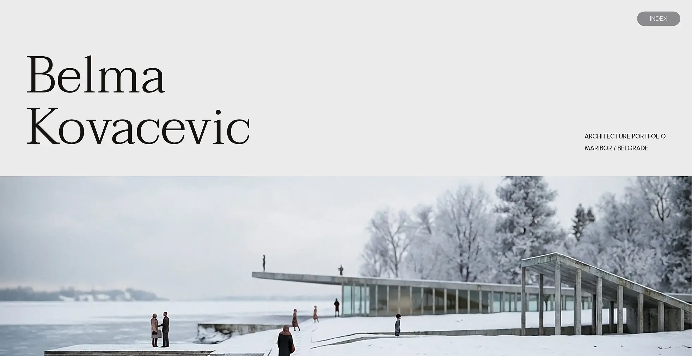
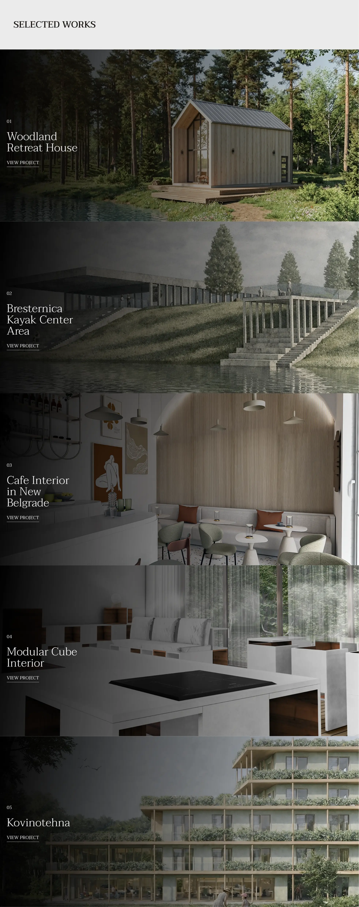
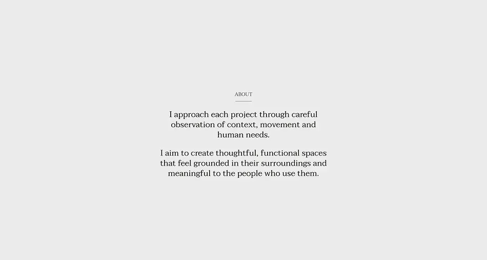
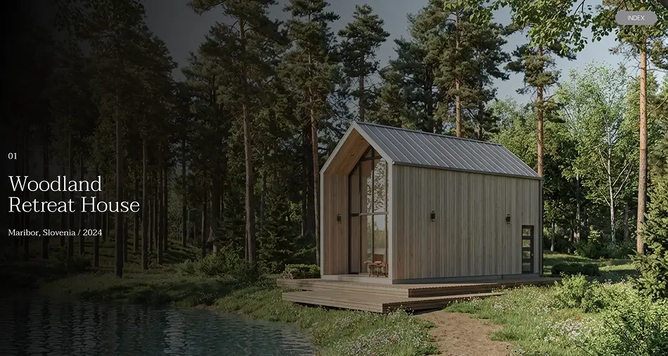
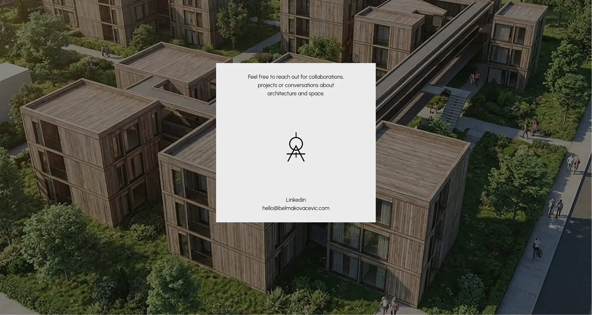
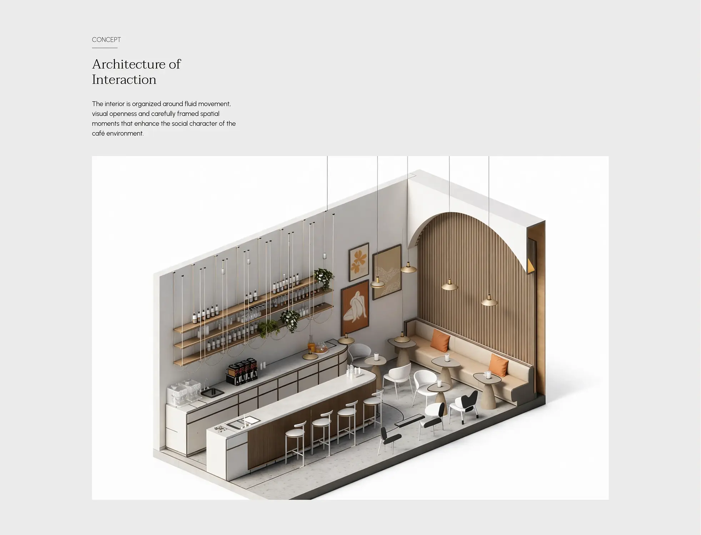
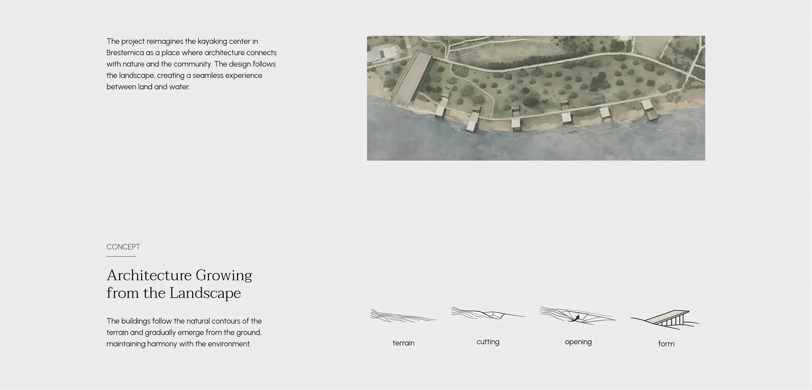

Architecture Portfolio is a minimalist website designed and developed to showcase architectural projects through a clean, visually focused experience. The goal was to let the work speak for itself, giving each project the space to communicate its concept, atmosphere, and design details without unnecessary distractions.
I created a visual approach built around spacious layouts, refined typography, and carefully arranged imagery. The website brings together a distinctive homepage and individual project pages, creating a consistent experience that guides visitors naturally from one project to the next.
The homepage presents a curated selection of architectural projects through large imagery and a clean, structured layout. Each project opens into a dedicated page combining visualizations, architectural drawings, and descriptive content, allowing visitors to explore the work in greater detail.
Subtle interactions and smooth transitions add movement without distracting from the projects themselves. Clear navigation, links between projects, and a responsive layout make the portfolio easy to explore across desktop, tablet, and mobile devices.